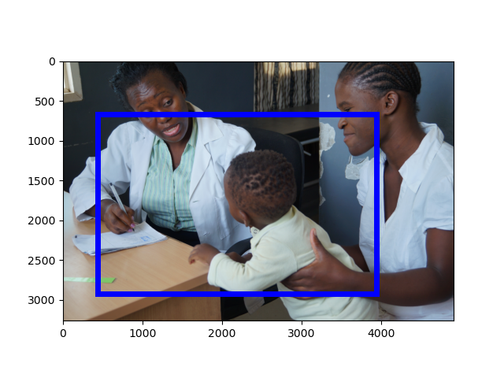
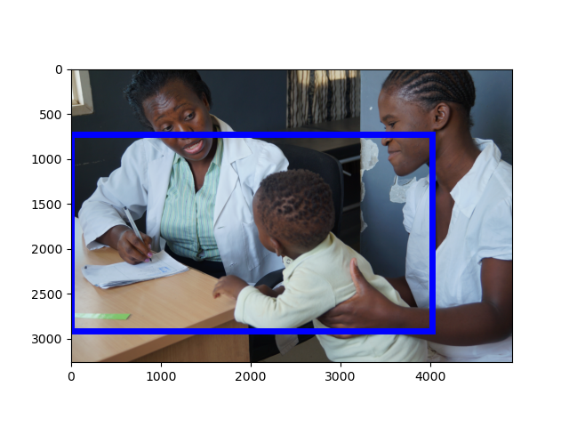
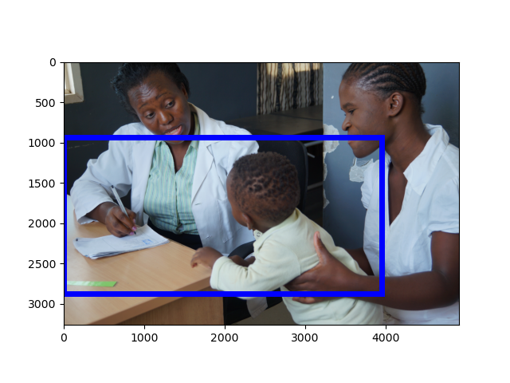

[Raw Text]: A medical worker attends to a child at Ndirande Health Center, one of eight health centers using the Chipatala Robot program in southern Malawi.
======================================================================
Mention: http://www.isi.edu/gaia/entities/uiuc/VOA_EN_NW_2017_01_25_3691253_0/EN_Entity_EDL_0000376
---- VOA_EN_NW_2017_01_25_3691253_0:10-15 A medical worker attends to a child at Ndirande Health Center , one of eight health centers using the Chipatala Robot program in southern Malawi .
Image:
GroundingConfidence: http://www.columbia.edu/AIDA/DVMM/Entities/GroundingBox/RUN00006/JPG/VOA_EN_NW_2017_01_25_3691253_0/3, 0.6967529

Event:
======================================================================
Mention: http://www.isi.edu/gaia/entities/uiuc/VOA_EN_NW_2017_01_25_3691253_0/EN_Entity_EDL_0000378
---- VOA_EN_NW_2017_01_25_3691253_0:83-89 A medical worker attends to a child at Ndirande Health Center , one of eight health centers using the Chipatala Robot program in southern Malawi .
Image:
GroundingConfidence: http://www.columbia.edu/AIDA/DVMM/Entities/GroundingBox/RUN00006/JPG/VOA_EN_NW_2017_01_25_3691253_0/2, 0.7275121

Event:
======================================================================
Mention: http://www.isi.edu/gaia/entities/uiuc/VOA_EN_NW_2017_01_25_3691253_0/EN_Entity_EDL_0000377
---- VOA_EN_NW_2017_01_25_3691253_0:30-34 A medical worker attends to a child at Ndirande Health Center , one of eight health centers using the Chipatala Robot program in southern Malawi .
Image:
GroundingConfidence: http://www.columbia.edu/AIDA/DVMM/Entities/GroundingBox/RUN00006/JPG/VOA_EN_NW_2017_01_25_3691253_0/1, 0.5600206

Event:
======================================================================
Mention: http://www.isi.edu/gaia/entities/uiuc/VOA_EN_NW_2017_01_25_3691253_0/EN_Entity_EDL_0000374
---- VOA_EN_NW_2017_01_25_3691253_0:63-65 A medical worker attends to a child at Ndirande Health Center , one of eight health centers using the Chipatala Robot program in southern Malawi .
---- VOA_EN_NW_2017_01_25_3691253_0:39-60 A medical worker attends to a child at Ndirande Health Center , one of eight health centers using the Chipatala Robot program in southern Malawi .
Image:
GroundingConfidence: http://www.columbia.edu/AIDA/DVMM/Entities/GroundingBox/RUN00006/JPG/VOA_EN_NW_2017_01_25_3691253_0/4, 0.5784659
Event:
======================================================================